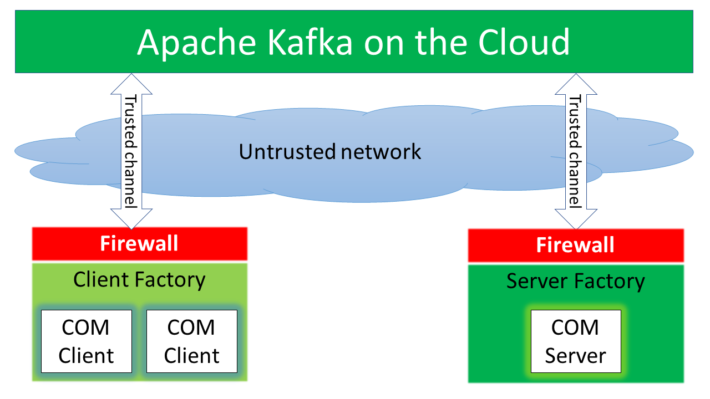

Legacy COM Application revamping
For many years Microsoft based its products on COM (Component Object Model) and its network extension DCOM (Distributed COM). Many customer built their infrastructure and products over COM technology. The technology is mature, but over the years it becomes legacy; there are many disadvantages when it is needed to use COM based application over networks and cybersecurity is mandatory today. To protect these applications it is needed to put in place countermeasures against malicious attachers or rewrite the entire applications with cyber-security in mind.
With Data Distribution Manager we overcome the previous problems, revamping legacy COM applications at transport layer.
COM/DCOM simple overview
Just try to have a look on how COM works. The following figure shows a basic behavior of DCOM (figure come from https://www.geeksforgeeks.org/distributed-component-object-model-dcom/):

Simplifiying: DCOM extends COM over the network and allows clients to connect to the component (server) just as if it is in the same machine. Looking at the figure above there is a common joining point: DCOM network protocol.
COM/DCOM over Data Distribution Manager
To overcome the DCOM network protocol we developed a library based on Data Distribution Manager which replace the transport layer and use all features available in Data Distribution Manager.
The following figure shows a simple overview:

Data Distribution Manager comes with two ready-made underlying protocols: OpenDDS and Apache Kafka. Both can be used as the final transport protocols. Depending on application and infrastructure requirements it is possible to choose one or the other.
Data Distribution Manager over OpenDDS
To have an overview on the protocol navigate on https://opendds.org/. It is more or less close to DCOM. It is based over a CORBA implementation. Data Distribution Manager has a simple IDL to have a common shared layer with other transport protocols (e.g. Apache Kafka). With OpenDDS the component acts as server like in DCOM and clients connects to it using OpenDDS. With OpenDDS it is not needed to have an external infrastructure, but clients shall be aware where is located DCPSInfoRepo or can use static discovery. Data Distribution Manager is able to start DCPSInfoRepo within the COM Server, anyway clients shall know the DCPSInfoRepo endpoint. OpenDDS can be configured in multiple way, can use multiple wire protocols and achieve the needs to replace DCOM network protocol within some network conditions.
Data Distribution Manager over Apache Kafka
To have an overview on the protocol navigate on https://kafka.apache.org/. It is far from DCOM. It is a stream platform with central server (clusterable), clients connects to the Apache Kafka server and it dispatch messages. With Apache Kafka both the component and clients connects use Apache Kafka servers to exchange messages. With Apache Kafka it is mandatory to have an external infrastruture. So what are the advantages to use Apache Kafka? Try to list some of them:
- The Apache Kafka servers stores the messages: a component (COM server) can recover from a fault and continue to operate from the last point it has stopped
- There is a unique point of dispatching: client and component (COM server) does not be aware of each other, only needs to know the address of Apache Kafka brokers.
- The previous point it is important if the COM application must communicate over the internet, over NAT network and firewall: the communication starts always from the Kafka client (COM Client and/or COM Server)
- Apache Kafka comes with all cybersecurity features: TLS, ACL, authentication and so on
COM over the Cloud
With Data Distribution Manager over Apache Kafka it is possible to have COM applications over the Cloud. Many cloud players today have an installation of Apache Kafka in their datacenters. So a legacy COM application can be revamped to be internet-aware. See figure below:

If the article is interesting and want to know more contact us visiting https://www.masesgroup.com/.